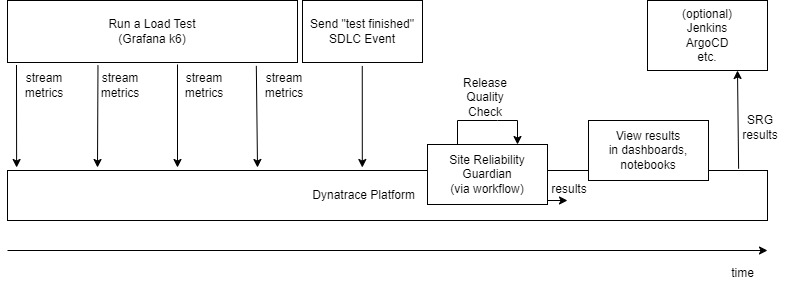

Release Validation for DevOps Engineers with Site Reliability Guardian#
In this demo, you take on the role of a Product Manager or DevOps engineer. You are running an application, and wish to enable a new feature.
The application is already instrumented to emit tracing data, using the OpenTelemetry standard. The demo system will be automatically configured to transport that data to Dynatrace for storage and processing.
Your job is to:
- Ensure each service in the application is healthy.
- Ensure that any new release of a microservice does not negatively impact the application.
To achieve these objectives, you will:
- Create a Site Reliability Guardian to test and ensure the health of your microservices (starting with the most user impacting service - the
checkoutservice) - Use the auto baselining capability of Dynatrace to suggest (and dynamically adjust) thresholds based on current and past performance.
A New Release#
Your company utilises feature flags to enable new features. A product manager informs you that they wish to release a new feature.
It is your job to:
- Enable that feature flag in a development environment.
- Judge the impact (if any) of that change on the application.
- If an impact is observed, gather the evidence and then disable the feature flag.
- Make the "go / no go" decision for that feature.
- Provide feedback on why you made the decision you did.
Logical Architecture#
Below is the "flow" of information and actors during this demo.
This architecture also holds true for other load testing tools (eg. JMeter).
-
A load test is executed. The HTTP requests are annotated with the standard header values.
-
Metrics are streamed during the load test (if the load testing tool supports this) or the metrics are send at the end of the load test.
-
The load testing tool is responsible for sending an SDLC event to signal "test is finished". Integrators are responsible for crafting this event to contain any important information required by Dynatrace such as the test duration.
-
A workflow is triggered on receipt of this event. The workflow triggers the Site Reliability Guardian.
-
The Site Reliability Guardian processes the load testing metrics and to provide an automated load testing report. This can be used for information only or can be used as an automated "go / no go" decision point.
-
Dynatrace users can view the results in a dashboard, notebook or use the result as a trigger for further automated workflows.
-
Integrators have the choice to send (emit) the results to an external tool. This external tool can then use this result. One example would be sending the SRG result to Jenkins to progress or prevent a deployment.

Compatibility#
| Deployment | Tutorial Compatible |
|---|---|
| Dynatrace Managed | ❌ |
| Dynatrace SaaS | ✔️ |